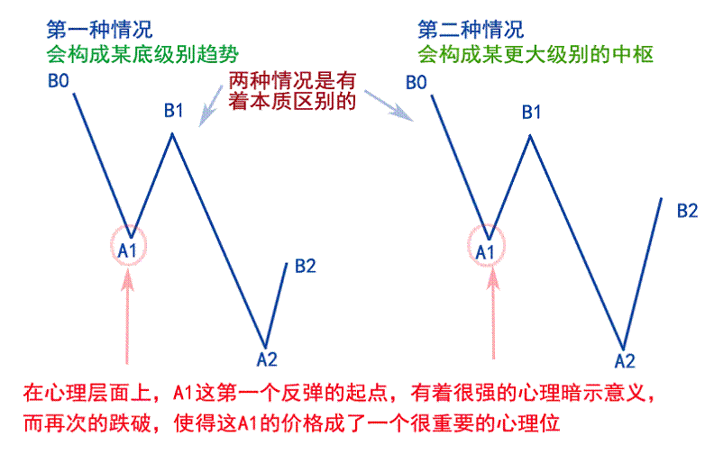
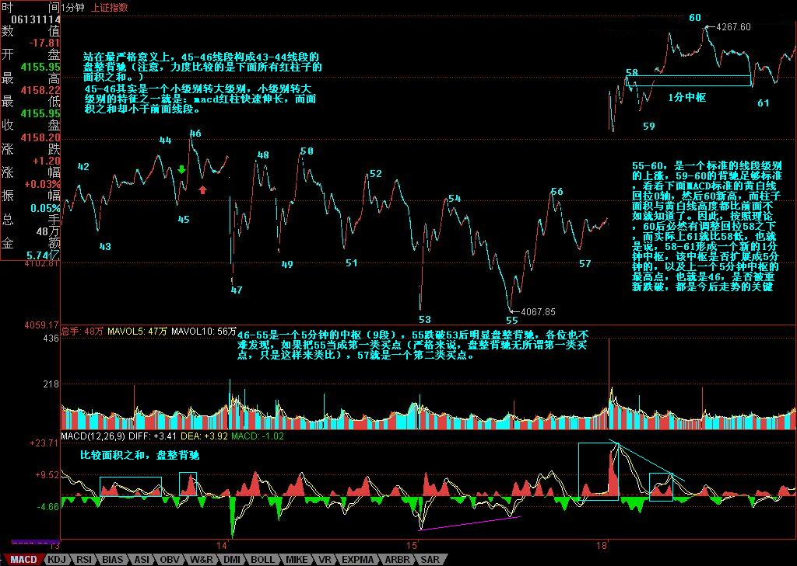
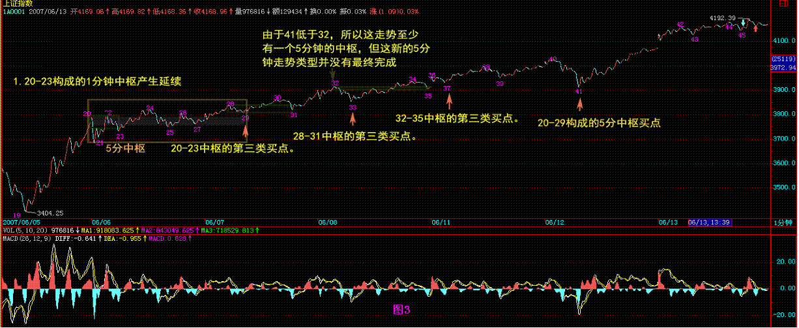
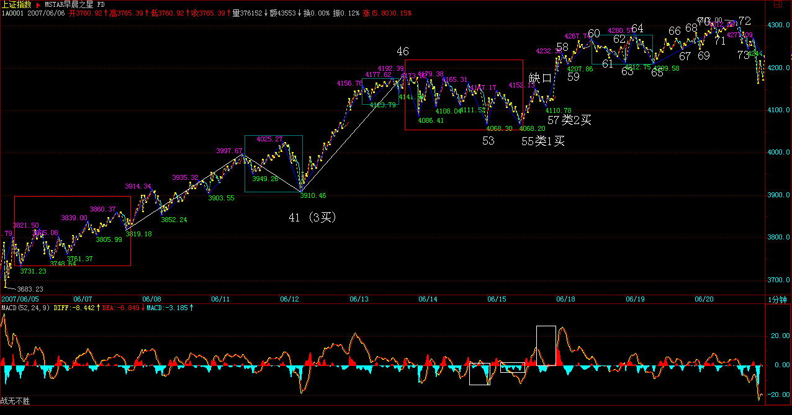

|
 |
教你炒股票60：图解分析示范五
(2007-06-19 08:04:06)
其实，枯燥的图形，里面包含着很深的心理学意义。走势，本质上是预期的合力。而预期，本质上是心理层面的。只不过对于市场来说，可以被当成分力去形成市场合力的预期，都是被外化为市场买卖行为的。你的恐惧，如果光是在那里恐惧而没有实际的行动，那并不构成市场的交易行为。因此，所有市场行为，其实已经被如此的心理模式给过滤一遍了。
举一个简单的例子，同级别走势从B0下跌到A1反弹到B1，再跌破下跌到A2，再反弹到B2，这可以分为两类：
一、B2低于A1.
二、B2不低于A1。
显然，第二种情况，会构成某更大级别的中枢，而第一种情况没有，因此这两种情况是有着本质区别的。
在心理层面上，A1这第一个反弹的起点，有着很强的心理暗示意义，而再次的跌破，使得这A1的价格成了一个很重要的心理位，而交易本质上都是预期的，这价位就构成了一种实在的预期分类：
一、预期能重新上去A1并实际交易。
二、预期不能重新上A1并实际交易。
三、观望。
第三种，在实际的走势中不产生实际的交易。因此一、二种心理预期构成了市场合力，而市场的走势是这合力的当下痕迹，因此这两种心理预期的大小，并不需要实际去测量，因为市场的走势就实际反映出来了。例如，如果实际上不能重新上去，出现第一种B2低于A1的情况，那么显然在当下的情况下，第二种心理预期大于第一种。

消息面、政策面、资金面，这面那面，最终作用的都是人心，人心因预期而交易，这里关系的就是人的贪婪与恐惧、人的贪嗔痴疑慢。而本ID的理论从不预测，没有预期，只跟随着市场合力、市场走势而行，这里无须贪婪恐惧，看图作业，如此而已。但光知道这点还远远不够，因为没有预期可能就是最大的预期，没有贪婪恐惧可能就是最大的贪婪恐惧。不预测、不预期，并不是不可预测、不可预期，而是不为贪婪恐惧而预期、预测，是根据走势的自身规律来。
走势是有规律的，这规律是不患的，这不患的根源在于人贪嗔痴疑慢的不患。为什么本ID要强调当下分解的多样性？因为走势本身就是当下形成中的，是市场各种预期的合力当下画出来的，而每种画法都是不患的，都是源自人的贪嗔痴疑慢，因此每种多样性的分解都是符合理论的，多样性不是模糊性，而是多角度去让市场本身自己去画地为牢，由此使得市场的走势万变不离本ID理论的控制之中，而这，恰好是市场自身的规律之一。
 不妨看看上图，上一课刚好说到“红箭头处比绿箭头高，所以不能确定该线段已经完成，还要看后面走势，由此可以知道如何去把握线段的结束”，有人可能问，为什么在这个位置不可以去预测、预期？因为市场自身并没有完成。但这里的未完成，是站在人观察的级别上说的，因为所谓的走势，首先是你观察的走势，没有离开你观察的走势。不同倍数的显微镜下的世界是不同的，但市场操作的成本、交易通道、资金规模等限制了人观察并能实际操作走势的显微镜倍数不可能无限小下去，所以必须确定一个最低级别的线段，把其下一切波动给抹平了。当然，根据严格的理论，用每笔成交当成最低级别，然后以此构筑线段，这样可以严格地分辨任何级别的走势，但这根本不具有操作性，特别现在交易成本增加，可操作的级别必然要增大，因此，一些可操作级别下的波动，必须要忽视掉。
站在最严格意义上，45-46线段构成43-44线段的盘整背驰（注意，力度比较的是下面所有红柱子的面积之和。）而细致分别线段以下级别，就知道45-46其实是一个小级别转大级别，而红箭头后第一次拉起不创新高，就可以出掉了，为什么，因为后面必然形成下上下的重叠结构，也就是有一个小中枢了，而线段以下级别的同级别操作，是不参与这类中枢的。当然，这是按最严格的，并没有太大操作意义的分析。而实际的操作中，大概真在有意义的操作，都至少是一分钟线段以上级别。因此，在该图中，如果你是按30分钟级别操作的，46-47的波动就可以不管的，从3404开始的反弹，一个标准的5分钟级别的上涨，因此你的持有就至少一直等待这5分钟级别的上涨出现背驰或突发破坏为止。

显然，46-55是一个5分钟的中枢，55跌破53后明显盘整背驰，各位也不难发现，如果把55当成第一类买点（严格来说，盘整背驰无所谓第一类买点，只是这样来类比），57就是一个第二类买点。55-60，是一个标准的线段级别的上涨，59-60的背驰足够标准，看看下面MACD标准的黄白线回拉0轴，然后60新高，而柱子面积与黄白线高度都比前面不如，由此就知道了。因此，按照理论，60后必然有调整回拉58之下，而实际上61就比58低，也就是说，58-61形成一个新的1分钟中枢，该中枢是否扩展成5分钟的，以及上一个5分钟中枢的最高点，也就是46，是否被重新跌破，都是今后走势的关键。如果46不再被触及，那就是超强走势，意味着3404点开始的5分钟上涨走势依然延续。
(买卖)
这里必须强调突发消息对市场走势以及操作的影响是不必过于在意的，本质上，任何突发的消息，不过增加了一个市场预期的当下分力，因此，最终还是要看合力本身，或者说是市场走势本身。一般情况下，由于背驰的精确定位需要用区间套的方法，所以突发消息，最不幸的，就是在这精确定位期间出现，例如这次530，就是这样。当然，这是一种小概率事件，更多情况，突发消息在背驰的精确定位后出现，这样突发消息对操作的影响就是0了。而对于那种最不幸的情况，用一个第二类卖点就足以应付，因此，突发消息出来后，在实际的操作中就不能放过这第二类卖点。不过要注意，并不是任何第二类卖点都需要反应的，这和级别有关，例如你是月线级别的，那这次所谓的大跌，看都不用看，爱跌不跌，随他去。即使你是5分钟级别操作的，如果某突发消息连一个1分钟的中枢都没破坏，只制造了1分钟以下级别的震荡，那么在所谓的第二类卖点，也是不用管的。原则很简单，任何消息，都只是分力，关键是看对合力的影响，看他破坏了多大级别的走势，这一切都反映在实际走势中，看图作业就可以了。
(买卖)
注意，突发消息破坏的级别越大，越不一定等相应级别的第二类卖点。例如，一个向下缺口把一个日线级别的上涨给破坏了(娇:到中枢），那么，消息出来当天盘中的1分钟，甚至线段的第二类卖点，都是一个好的走人机会，如果要等日线级别的第二类卖点，可能就要等很长时间、而且点位甚至还比不上这一点，因为走势是逐步按级别生长出来的。还有，级别只是区分可操作空间的，为什么按级别？因为级别大，操作空间按通常情况下就大。但在快速变动的行情中，一个5分钟的走势类型就可以跌个50%，例如这次大跌，因此，一个这样的5分钟底背驰，其反弹的空间就比一般情况下30分钟级别的都大，这时候，即使你是按30分钟操作的，也可以按5分钟级别进入，而不必坐等30分钟买点了。
缠中说禅：
2007-06-19 15:48:00
今天的走势昨天已经说得很清楚，4224点下不出现第三类卖点，就是强势震荡。今天的走势，显然符合这个要求。4224点，就是上图61这位置，从60开始的1分钟中枢[4224，4254]，今后两天就看这中枢的第三类买卖点。换言之，还和昨天说的一样，只要不在4224点下出现1分钟级别的第三类卖点，那就是强势，至于大盘要展开新一轮上攻，就要在4254上出现1分钟级别的第三类买点，否则大盘就在该区间内震荡继续中枢震荡延伸。
(买卖)
关于大盘的剧本不变，但个股之间显然会有分化，因此不能光看大盘，现在的股票，在技术上无非几类：
一、创新高后回试的，这可以用第三类买点来把握；
二、在前期高位下盘整蓄势的，这可以用小级别的第三类买点把握其突破，或在震荡低点介入；
三、反弹受阻拉平台整理的，这个第二同样处理，只是位置与前期高位有距离；
四、依然在底部构筑双底、头肩底之类图形的，这可以用第一、二类买点把握。
具体个股就不说了，来这里，如果希望一点脑子都不动，那是不行的。动脑子得到的东西是你自己的，否则永远都不行。
缠中说禅：
2007-06-19
15:58:26 [举报]
[匿名] 洗晕了的大道 =
那钢铁本ID前几天已经说了要改变剧本先让想走的人出来，你还以为本ID是说着玩的？本ID那16只股票，加上钢铁、139、338、636，总共也就20只，找一个合适的买点应该不费劲，为什么不等到有买点再介入？000777、000416如果不敢买，难道600635本ID还说得还不够清楚？上周初洗盘的时候，难道没机会买？不说了，本ID下午晚上还有事情，要去一趟西三环外某街道，先下，明早见。
石猴：
2008-10-13
17:38:43 [举报]
为什么本ID要强调当下分解的多样性？因为走势本身就是当下形成中的，是市场各种预期的合力当下画出来的，而每种画法都是不患的，都是源自人的贪嗔痴疑慢，因此每种多样性的分解都是符合理论的，多样性不是模糊性，而是多角度去让市场本身自己去画地为牢，由此使得市场的走势万变不离本ID理论的控制之中，而这，恰好是市场自身的规律之一。 这次回来才对这点感慨万千啊！哈哈
缠中说禅： 2007-06-20 15:36:32 （走势分析方法）
今天走势十分正常，一个正常的中枢震荡，下午13点半附近的背弛如果还不能当下看出，那么就要抓紧学习了。具体的分析，将在课程61里。如果当下没能分析出来的，请先自己分析一下，然后对照明早的课程，这样才能提高。
(关于缺口)
由于周一那缺口还在那里，因此成为行情发展的一个隐患，前面已经说过，只要震荡触及4192点附近的46，那么中枢就将扩展。今天的走势已经触及该点，所以后面将是一个大的中枢震荡。
（关于跌破前5分钟低点描述）
短线还是看在4224点的61，如果一个1分钟走势不能重新触及该点，就会形成一个5分钟的第三类卖点，那么震荡的区间就要往下扩展。
如果能重新站稳4224点，那震荡依然是强势的。中线看，4144点的1/2线十分关键，如果该线站不稳，那么大盘的调整级别就加大，否则就问题不大。不会看的，短线还是看5日线，中线看5周线，不破就问题不大。

个股方面，那16只里继续有几只新高了，其他在震荡后也会跟上的。昨天说那四种技术形态的个股，必须按照技术图形分别对待。
特别是创新高的股票，必须注意有没有大级别背驰，有的，一定要小心，小心中了多头陷阱。如果没有背驰，或者盘整背驰最终转化为第三类买点，才可以介入。
至于，其他形态的，看好技术图形就行。
缠中说禅：
2007-06-20
15:43:19 [举报]
全线飘红
检讨。自己虽然是3买进的569，但发现是盘整一直没有出来。只盯着是缠的股票，就忘了缠的理论了，没有挣到钱，损失时间成本。
=
你看看569的60分钟图，请说说10.78那天是什么？一个这么大级别的背驰，怎么可能1、2天就调整过来？本ID当天已经说得很清楚，剧本改了，要买要等待买点出现。
再说一次，就算本ID没有专门提醒剧本改了，也应该看图作业，如果不明白，看看像569这样的背驰，一般是怎么调整的。569是本ID的股票，难道000999、000777、600635、600777、000778、600432、000915等等就不是？本ID对任何股票都只是按图作业。
缠中说禅：
2007-06-20
15:47:20 [举报]
[匿名] 新股手
老大昨天生气，跑了，不上课了。安慰一下先。呵呵。俺没学好，但俺只用你教的盯5日线，也蛮实用。530上午高点跑出来了，躲过一劫。今天上午也除掉持股的7成。呵呵。
俺的两个问题昨天没讨到答案，今天加一个：）
1，你以前说中移动回归后，联通有戏。现在中移动回归确定了，俺可以重仓联通吗？
2，416既没业绩又没题材，还要争第一吗？
3，能不能多选几支中线的股？申明不是你的。这里有人呼吁过。我顶一下。
==
好好学习理论，如果你对理论有感觉。其他问题，没什么意义。一切按图作业。至于600050，中线当然没问题，就看你有没有这个耐心。一般这种股票，散户都没什么必要参与。散户完全可以根据最多30分钟级别进行短线操作，这样的效率是最高的。当然，前提是你真明白了本ID的理论。
缠中说禅：
2007-06-20
15:49:31 [举报]
[匿名] abc
我们对于5分钟或30分钟的线段划分比较糊涂，大师能不能下次分析一个5分钟的图？
==
多少分钟的图和多少分钟的级别是没什么关系的。如果看5分钟、30分钟去决定线段，等于用倍数很小的显微镜去看，与1分钟的唯一区别就是精度低了。用1分钟的图，一样可以判断出年线的中枢。
|
|
|
|